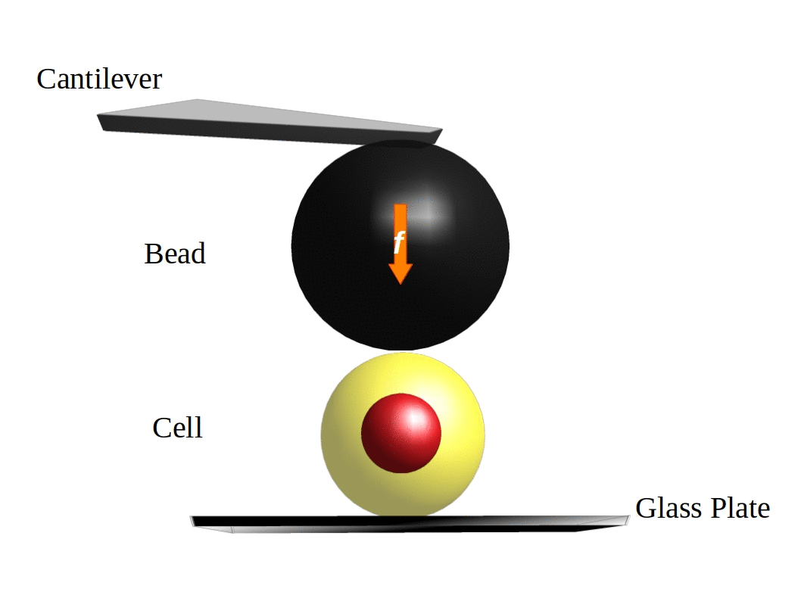
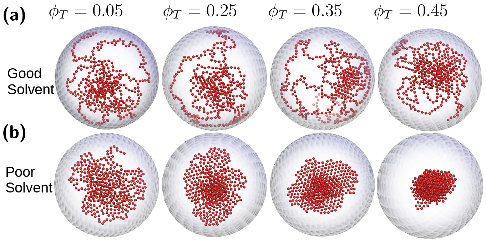
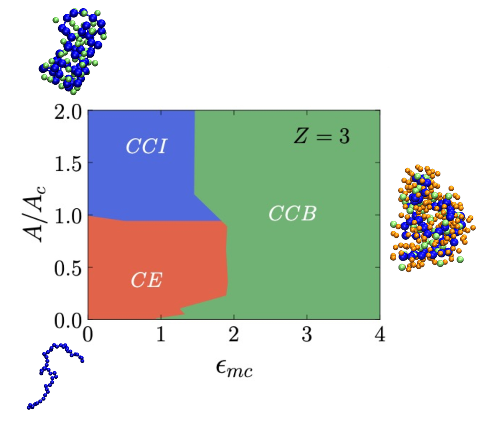
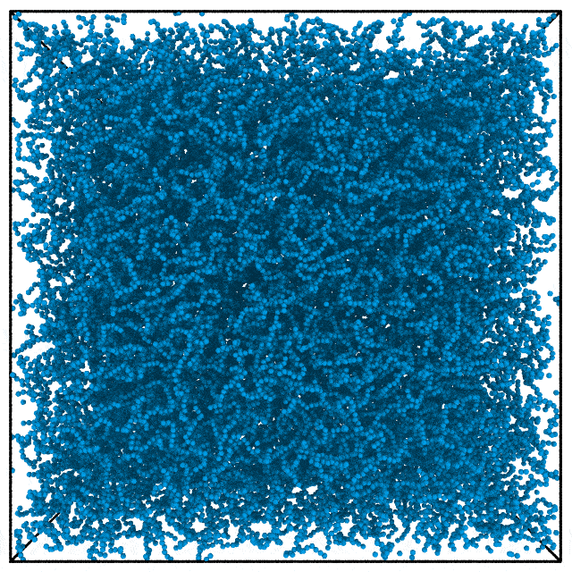
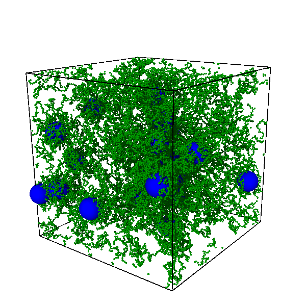
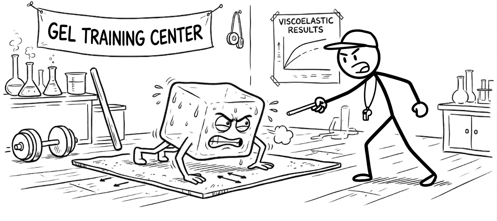
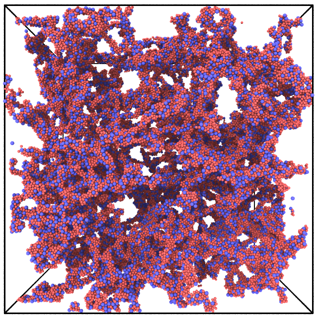

Research
I specialize in the multiscale modeling of soft matter and biological systems, focusing on the interplay between self-assembly and mechanics. My work utilizes statistical physics and molecular dynamics simulations to decode how molecular-level organization dictates macroscopic rheological properties. By simulating these systems in varied environments, I aim to uncover the fundamental principles governing their structural evolution.
Key areas of my research include:
Chromatin physics: Chromatin is a complex of DNA and histone proteins condensed and tucked inside the nucleus of a cell. The compaction of chromatin depends upon the various factors such as the cell's life stage and differentiation state. Since, the nucleus occupies a significant volume of the cell in pluripotent stem cell state, its response contributes significantly to the mechanical response of the cell. Consequently, the compaction state variable of the chromatin has a direct impact on how cell responds to mechanical cues. In 2014, researchers showed in experiments that the nucleus of a pluripotent mouse embryonic cell exhibits auxeticity. We built a analytical model using the chromatin compaction variable to show that, depending upon the life stage of the cell, it can behave normal or auxetic when mechanically probed.

Polymer conformations in crowded environments: Polymers exhibit distinct structural behaviors depending on the quality of their environment. In good solvent conditions, a polymer adopts an expanded, open structure to maximize its interactions with the solvent. Conversely, in poor solvents, it collapses into a compact globular state to minimize unfavorable solvent contact. However, external factors such as molecular crowding and confining boundaries significantly alter these conformational transitions. Using molecular simulations, we studied a long polymer under spherical confinement across varying crowder densities. By systematically tuning interaction parameters—specifically polymer-crowder and polymer-wall strengths—we demonstrated that a polymer can maintain an extended conformation even in poor solvent conditions, driven by the competing effects of polymer-wall interactions and excluded volume.

Conformational phase diagram of charged polymers: This picture becomes even more complex if we add charges to the crowder particles and the polymers. We studies this by simulating a charged polymer along with oppositely charged counterions. We demonstrated that the polymers can exhibit three distinct phases depending upon the charge density and the polymer-counterion interaction strength. With low charge density and weak polymer-crowder attractive interaction, the polymer is in extended phase, while it collapses when the charge density is high while keeping the same weak polymer-crowder interaction. In this case the polymer collapses due to high charge density and it is the most compact state and the collapsed globule is devoid of the counterions. There exists, a third collapsed phase as well which emerges when the charge density is high along with a high polymer-crowder attractive interaction. This phase has crowders embedded inside the globule which act as a bridging particles.

Collagen Gels: The networks and gels are ubiquitous around us; from scaffolding of the tissues in our bodies to the cheeses in our food. These percolating networks are formed by the self-assembly of the smaller particles or polymers. The particles interact via an attractive force and as the attractive forces dominate the thermal fluctuation, the networks emerge. The strutural and mechanical properties of the network depend upon factors such as the temperature, pH, volume fraction and the interparticle interactions. Along with studying the structural properties such the pore size, and the thickness of the network strands, one can study the rheological response in different manners. In my current work, I employ a molecular dynamics simulation to understand the self-assembly process of type-II collagen gels and the effect of various physical parameters on its structure and mechanical response.

Self-healing Hydrogels: Hydrogels are networks embedded in water. These are not only soft but wet as well. With suitable chemistry and water content, they are biocompatible and hence hold an extreme importance in tissue engineering. Designing the hydrogel with correct mechanical properties to be useful is still a challange at large. One of the approaches to tune the mechanical response is to add nanoparticles of different sizes at different concentrations. This will help to synthesize the gels with a matching stiffness as the required tissue. These gels self-heal after the rupture by cyclic shearing.

Training Gels: There are two most important factors which determine the viscoelastic properties of a gel; the physical conditions such as temperature, pH, concentration under which the gel was synthesized and the chemistry of the molecular units. However, new experiments show that there might be a third way of tuning the mechanical properties of a gel; training a gel by mechanical shear. In this method, the gel goes under shear while it is self-assembling. The frequency and the amplitude of the shear are critical factors in determining the strength of the final gels obtained.

Fatigue in Gels: The damage in the system is accumulated after repeated shear of the system. After a number of cycles, the system ruptures. We employ, yet again, our favourite molecular dynamics simulations to study the fatigue in a Kob-Anderson type binary gel.

For a complete list of publications and projects, visit the Publications page or my Google Scholar profile.
In News
A physicist’s take on understanding stem cell differentiation read more